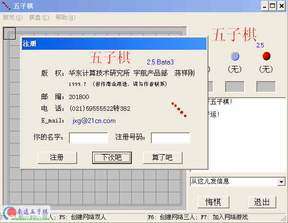

――支持人机对战。而且智商还不差，如果你觉得“进阶”级别不够高的话，那么“较难”一定能满足你们。
――支持双人模式。
――支持局域网和直接电缆连接。可以两个人在网上对战，还可以三个人同时玩“三足鼎立”，看谁先赢？在局域网上玩时，必须有一个人先创建，其他人再加入。
如果在加入网络游戏（功能键F7）时速度特别慢，好象要死机的话，请耐心等待几分钟。产生这个问题的原因可能是你们的IP地址是动态获取的。要解决这个问题，请把“网上邻居”属性中的IP地址改为指定地址。
――支持多语种。如果你的操作系统是中文win95/98/nt，那么游戏的菜单及提示都是中文；如果你的操作系统是英文win95/98/nt，那么游戏的菜单及提示都是英文。
――超过五个子连成一条线不算赢。

很想玩啊,现在就下载
谢谢你啊，怎么注册啊